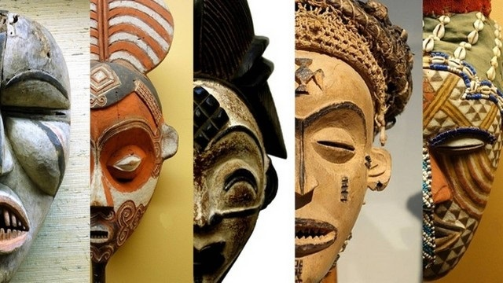
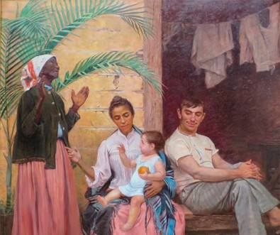

Arte e Cultura
A arte nos conecta e nos faz o que somos hoje
Como a arte age como proteção social?
a arte ajuda no desenvolvimento de habilidades interculturais em todas as
idades, combatendo, principalmente, os preconceitos. A arte também é um portal para o descobrimento sobre outras culturas
e os seus costumes.
Como a arte pode ser usada como ferramenta contra o racismo e o preconceito?
por meio de manifestações, intervenções e a transmissão de
mensagens que busquem a promoção da empatia e da compreensão da diversidade cultural e étnica.
Como a cultura se relaciona com a arte?
A arte e a cultura estão ligadas entre si, pois é através da arte
que muitas culturas podem ser manifestadas, esculturas, pinturas, escrituras e outros tipos de manifestações
artísticas dizem muito sobre uma cultura.
arte africana
Uma principal carácteristica da arte africana é que muitas delas representam os costumes das tribos, outra carácteristica
é que ela muitas vezes apresentam uma figura humana que identifica a procupação com os valores étnicos e religiosos.
Algumas manifestações artísticas africanas incluem danças, escuturas de pedra ou madeira e máscaras.

Obras contra o racismo
Hoje em dia, várias pessoas acabam dedicando a sua carreira artistica para produzir pessas
contra o preconceito em geral. Aqui está um exemplo:
"A redenção de cam" de Modesto Brocos é uma pintura famosa que retrata o grande
preconceito que se tinha contra os povos negros na antiguidade, ela representa o conceito da política de branqueamento
que ocorreu no Brasil durante o período colonial.

Qual é a importancia da preservação de culturas através da arte?
A preservação das culturas através da arte é importante, pois ela deixa um marco que representa
a identidade cultural e religiosa de um povo, uma peça que representa seus costumes e crenças e que pode ser apreciado por
todos, reconhecendo então, um pouco de diferentes povos.


.jpeg)